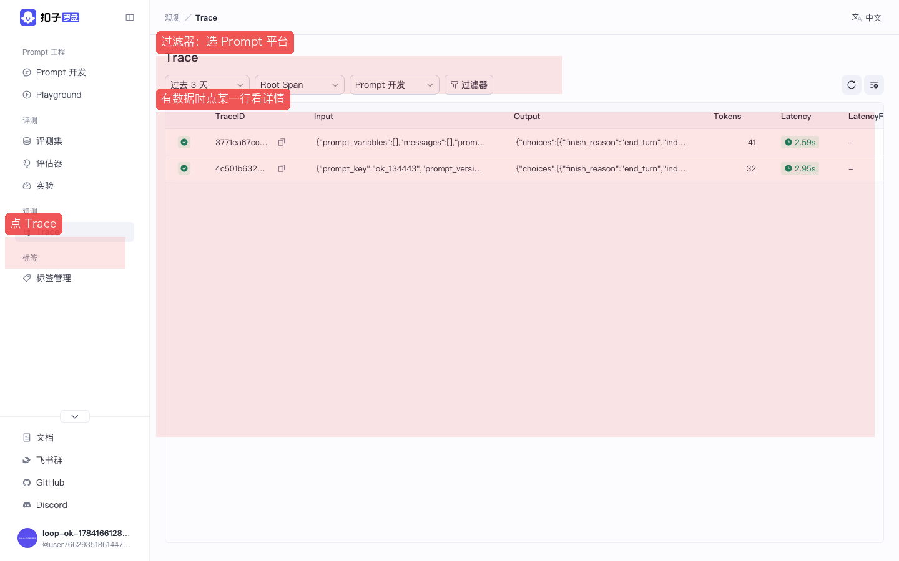
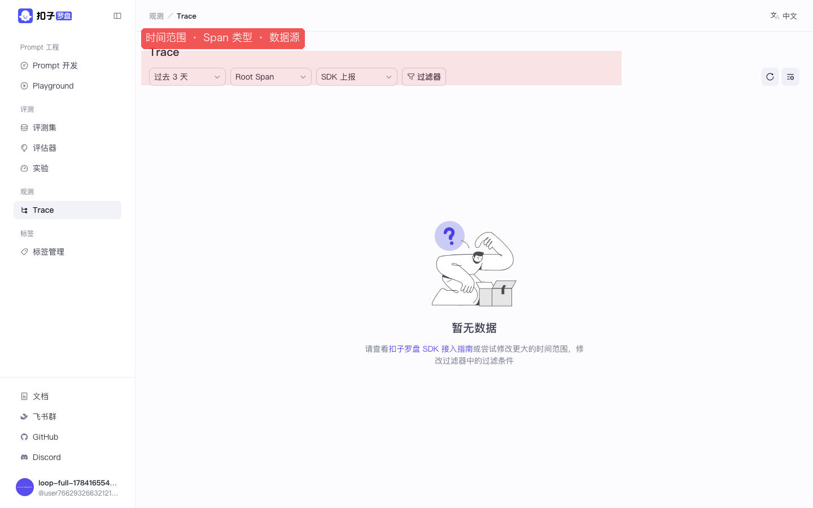
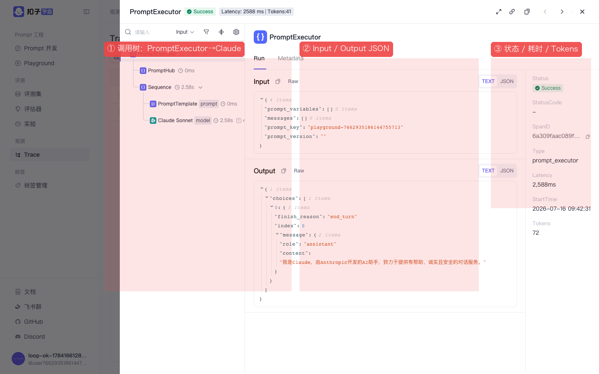

Coze Loop 开源实战 · P05 / 共 8 课 · ≈20 min · 跟做版
P05 · 观测 Trace：找到 Claude 调用链
在 Trace 里找到 Prompt 调试产生的调用，看清耗时、Token 和输入输出。 截图红框为操作重点。上级：总目录。
图上的红色编号框标出你要点的位置。请按「文字步骤 → 对照截图」顺序做；做完看每步绿色验收。
1
打开 Trace
Trace 是什么？每次 Prompt 运行的「黑匣子」：谁调用了谁、花了多久、输入输出是什么。
- 侧栏点 Trace
- 若提示「暂无数据」：先去 P01 再点一次「运行」，然后回到这里刷新

图：Trace 页。先检查顶部过滤器，不要只盯着空状态插画。
✅ 验收：页面标题为 Trace。
2
把数据源切到 Prompt
为什么空？默认若选「SDK 上报」，界面调试产生的 span 可能看不到。要改成 Prompt 或放宽条件。
- 看顶部工具条：时间范围、Span 类型、数据源 / 平台
- 时间选「过去 3 天」或更大
- 数据源 / 平台选 Prompt（或「全部」）
- 点刷新；列表应出现行

图：顶部筛选工具条——时间、Span 类型、数据源都要会调。
✅ 验收：列表出现至少一行，而不是「暂无数据」。
3
点开详情：看到 Claude Sonnet
- 点列表中某一行
- 左侧看调用树：常见
PromptExecutor→Claude Sonnet - 中间看 Input / Output JSON
- 右侧看状态 Success、耗时、Tokens

图：成功 Trace 详情。红框①调用树 ②输入输出 ③元信息。这是确认「Claude 真的被调用了」的铁证。
✅ 验收：你能指出 Claude Sonnet 节点，并读出一句 Output 文本。
仍没有数据
确认 P01 运行成功；过滤器选 Prompt；时间范围够大；点刷新。